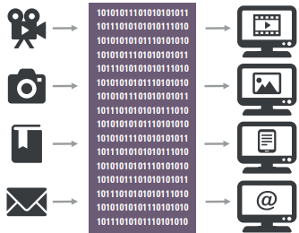

Com o avanço da tecnologia e a adoção massiva de sistemas computacionais nas organizações, o armazenamento de dados se tornou um componente fundamental da infraestrutura de TI. Tudo aquilo que é processado digitalmente, ou seja, convertido em uma sequência de 0s e 1s, precisa ser armazenado de forma segura, acessível e permanente.
Inicialmente, os dados eram armazenados em memórias voláteis, como a memória RAM, que perdem seu conteúdo ao serem desligadas. No entanto, para garantir persistência, foram desenvolvidos meios de armazenamento não voláteis, como os discos rígidos (HDs) e os SSDs.
É uma mídia de armazenamento mecânica amplamente utilizada, com capacidade para grandes volumes de dados e acesso relativamente rápido. Internamente, funciona com discos giratórios e cabeças de leitura/gravação.
Os SSDs não possuem partes móveis, o que garante maior velocidade de acesso, resistência a choques, menor consumo de energia e menor peso. Por isso, são muito utilizados em notebooks, tablets e smartphones.
"Storage" é um repositório centralizado de dados da organização, funcionando como servidor de arquivos, backup ou área de compartilhamento. Ele pode ser classificado em:
As redes SAN utilizam tecnologias como RAID para garantir redundância e integridade dos dados. Elas permitem o compartilhamento eficiente de dados entre vários usuários e sistemas, inclusive remotamente.
Backup é a cópia de dados feita para garantir segurança e continuidade dos negócios em caso de falhas ou perdas. Ele pode ser realizado em mídias ópticas (CD, DVD, Blu-Ray), magnéticas (HD) e eletrônicas (SSD, pen drive, cartão SD).
Existem três tipos principais de backup:
O data center é o ambiente físico que abriga os servidores, storages, equipamentos de rede e sistemas que mantêm os dados e aplicações funcionando. Ele oferece infraestrutura segura, escalável e de alto desempenho para as empresas.
Seus principais componentes são:
Serviços comuns oferecidos por um data center:
Existem diferentes tipos de data center, de acordo com o espaço físico, recursos disponíveis e necessidades da organização. Além disso, todo data center deve possuir dois níveis essenciais de proteção:
Esses data centers são construídos especificamente para suportar operações críticas, com salas dedicadas, ambientes controlados e estruturas que garantem redundância, escalabilidade e segurança física e lógica. São ideais para grandes empresas que dependem da continuidade dos serviços.
São ambientes adaptados dentro de prédios que abrigam diferentes empresas ou funções. Por isso, estão mais sujeitos a riscos como incêndios ou acessos não autorizados. Para operar com segurança, precisam adotar soluções como sala-cofre, monitoramento rigoroso e controle de acesso físico.
Trata-se de data centers compactos e móveis, construídos em módulos que podem ser facilmente transportados e instalados em locais de difícil acesso ou com espaço limitado. São ideais para projetos emergenciais, operações temporárias ou regiões remotas. Possuem estrutura interna completa com climatização, segurança e conectividade.
Recomenda-se que veja a aula narrada na aula 4 da unidade 1.
Com o crescimento do volume de dados e das aplicações, o armazenamento se torna essencial. As empresas iniciam com soluções locais e, conforme crescem, passam a investir em data centers próprios ou compartilhados, com soluções escaláveis, seguras e eficientes.
O mercado de data centers está em expansão e, cada vez mais, as empresas fornecem não apenas armazenamento, mas também serviços de infraestrutura, plataforma e software na nuvem.